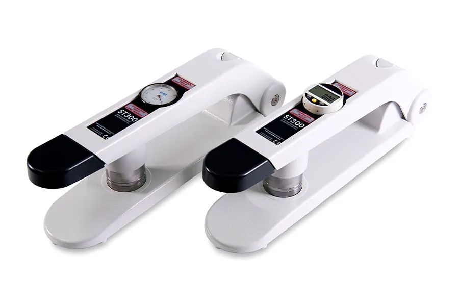
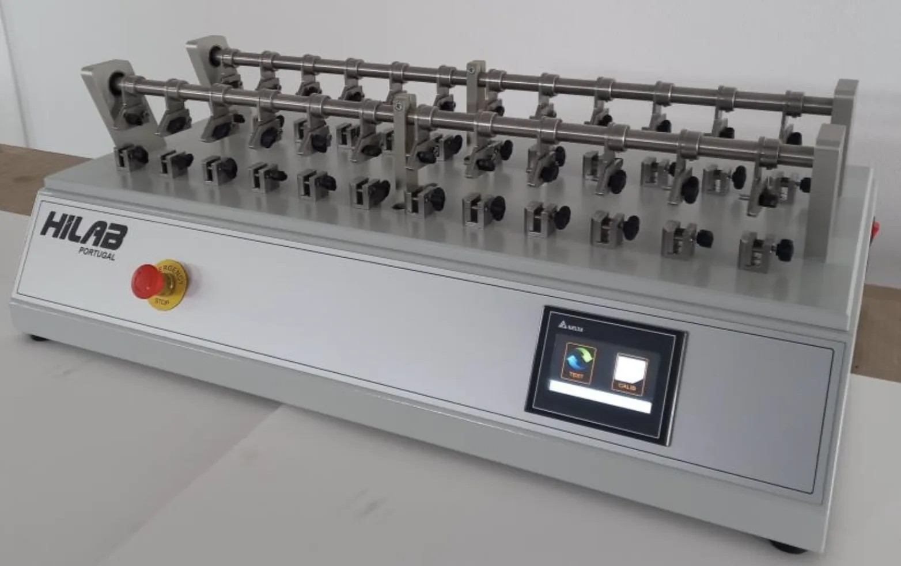
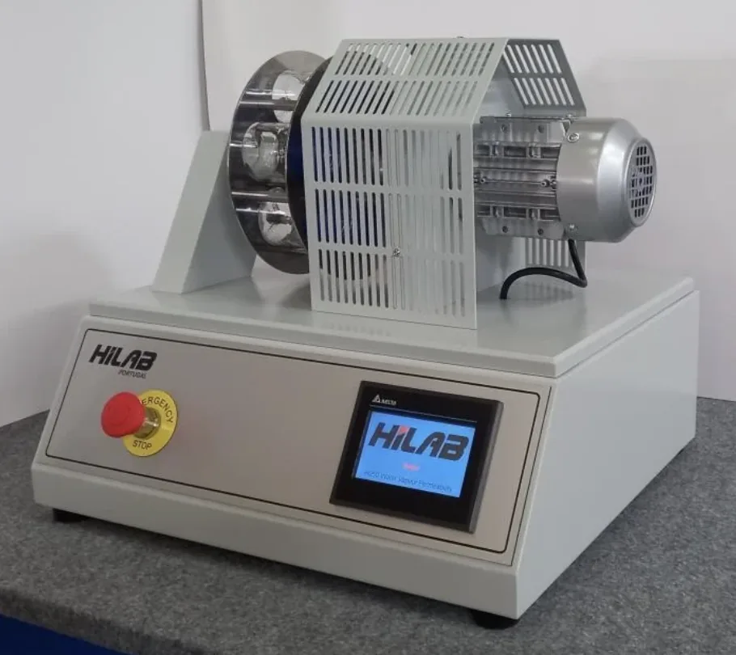
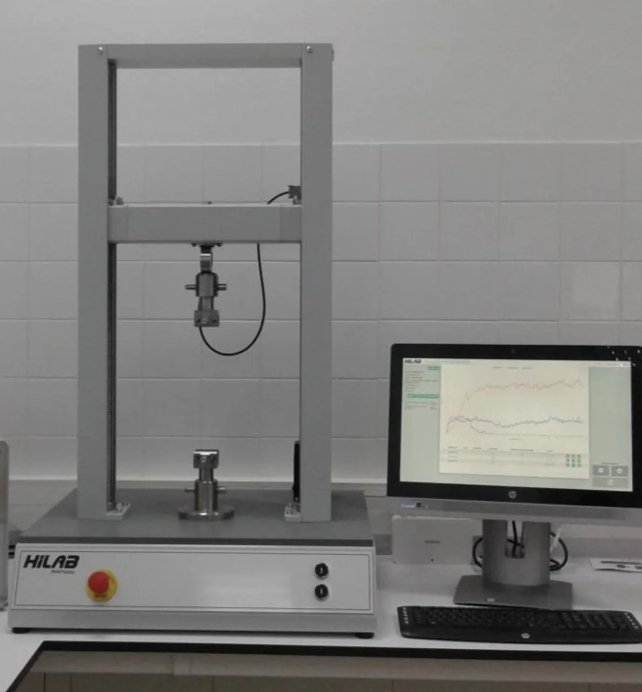
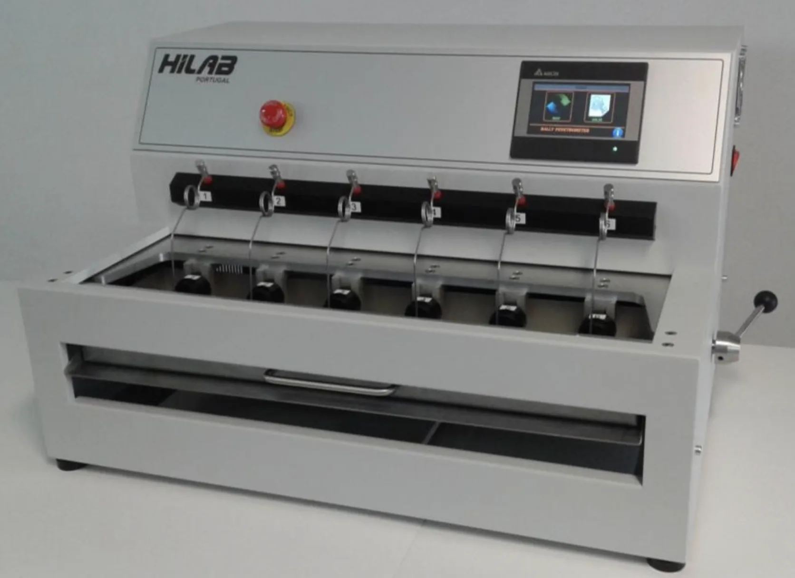
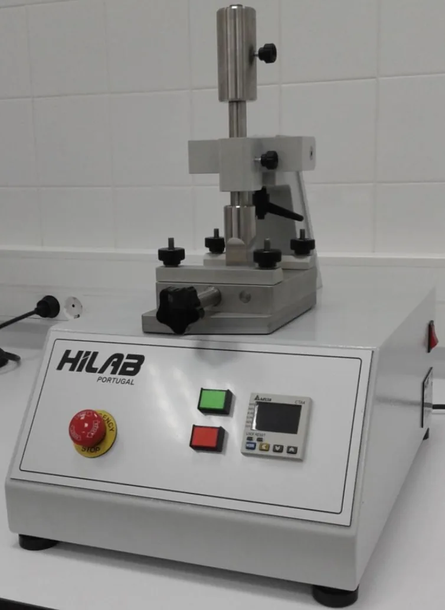

Laboratory and physical-testing equipment for tanneries and footwear factories — softness, moisture, flexing, abrasion, water resistance, thickness, strength and PPE testing, built to ISO, EN ISO and SATRA standards.

Kymera Group supplies and distributes the full range of laboratory and physical-testing equipment used by tanneries, footwear manufacturers and quality-control labs. From everyday checks — leather softness and moisture — to the complete suite of footwear physical tests, every instrument is built to the relevant ISO, EN ISO, IUP, IUF or SATRA method.
Two instruments anchor the everyday tannery lab: the ST300 softness tester and the Humimeter LM6 leather moisture meter. Around them sits a deep catalogue of flexometers, abrasion and rub-fastness testers, water- and vapour-resistance rigs, thickness gauges, dynamometers and PPE testing — all available individually and matched to the standard you test against.





The two instruments tanneries reach for daily — quick, non-destructive checks on the leather itself, both available through Kymera Group.
Determines the softness of leather without defacing the hide or skin. The material is clamped above an aperture of known diameter and a specific load is applied through a pin of smaller diameter; the resulting deflection is read on the gauge. Also used for coated fabric and other soft materials.
A hand-held device for the non-destructive determination of leather moisture. It detects the water content in leather quickly and without damaging the hide — ideal for incoming control, monitoring through processing and checking finished goods before dispatch.
The complete range of testing instruments for tanneries and shoe factories. Filter by family or search by name or standard.
Download the full list of machines and equipment for tanneries and shoe factories — every instrument, with its reference standards, in one PDF.
Tell us which test you need to run — or the standard you work to — and we will recommend the right instrument and provide a detailed quotation.